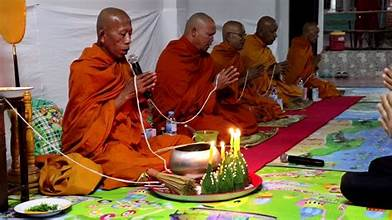

üé≠‚ú® Dance and Music of Arunachal Pradesh ‚Äì Echoes of Tradition and Spirituality üé∂üï∫
üíÉ Traditional Dance Forms ‚Äì Cultural Reflections in Motion
Aji Lamu –
A Buddhist-inspired dance that narrates tales from Buddhist scriptures.
Dancers wear colorful costumes and ornate masks while enacting divine stories.
Popir Dance –
A vibrant folk dance of the Adi tribe, performed to mark harvest celebrations.
Women in colorful traditional attire perform rhythmic steps that reflect joy and community bonding.


Rikham Pada –
A lively tribal dance performed by the Apatani community during festivals.
The synchronized movements reflect the unity and harmony of the community.
Buiya Dance –
A traditional dance of the Mishmi tribe, performed during important ceremonies.
The dance is accompanied by folk songs praising the spirits and ancestors.
üï∫ Ritual and Warrior Dances ‚Äì Spirit of Valor and Reverence

Yak Dance –
A dynamic and visually spectacular dance that honors the yak, a vital part of Monpa culture.
Dancers in elaborate yak costumes perform lively movements to the beats of traditional drums.
War Dance (Chalo Dance) –
A vigorous dance performed by the Nocte tribe to showcase bravery and strength.
Symbolizing war preparedness, it is often performed with swords and shields.


Ponung Dance –
A lively and synchronized group dance performed by the Adi tribe during agricultural festivities.
Women gracefully move in circles, singing folk songs that celebrate nature and prosperity.
Rekham Pada –
A dynamic dance by the Apatani tribe, performed to drumbeats and cymbals.
Dancers in vibrant attire narrate stories of community bonding and tradition.

Lion and Peacock Dance –
A visually captivating performance by the Monpa tribe, representing mythical stories.
Performers in lion and peacock costumes move gracefully to traditional rhythms.
üé∂ Traditional Music ‚Äì Melodies of Spirituality and Festivity
Monpa Folk Songs –
Spiritual and melodious songs sung during religious ceremonies and festivals.
These songs often narrate stories of divine beings and ancient myths.

Adi Songs –
Celebratory songs of the Adi tribe that reflect themes of love, valor, and nature.
Accompanied by traditional instruments like drums and flutes.
Baryi Songs –
Traditional Nyishi folk songs that celebrate village traditions and folklore.
Often performed during weddings and community events with great fervor.
Ritualistic Gong Music –
A meditative musical form where gongs resonate to create a divine atmosphere.
Often played during religious rituals to purify the surroundings.
Sohar Songs –
Joyous songs performed by the Mishmi tribe during birth ceremonies.
These songs reflect happiness and divine blessings for the newborn.

üé§ Ritualistic and Spiritual Music ‚Äì Invoking Divine Energy
Buddhist Chanting –
Melodious chants performed by monks to invoke peace and spirituality.
The rhythmic chanting creates a meditative ambiance during rituals.


Nyishi Flute –
A wind instrument used by the Nyishi tribe, producing soulful melodies that connect with nature.
Often played during festivals and community gatherings.
üé∏ Modern and Contemporary Music ‚Äì Fusion of Tradition and Modernity
Folk Fusion –
Modern interpretations of traditional tribal music blending contemporary beats with ancient rhythms.
Young artists are reviving folk traditions through creative expressions.
Arunachali Pop Music –
A blend of local folk tunes and modern musical elements that reflect the vibrant youth culture of the state.